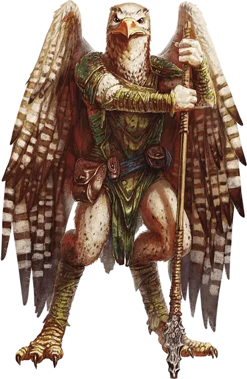

Ааракокра
Aarakocra
Средний Гуманоид, нейтрально-добрый

Класс Доспеха 12
Хиты 13 (3к8)
Скорость 20 футов, летая 50 футов
| мод | спас | ||
|---|---|---|---|
| СИЛ | 10 | +0 | +0 |
| ЛОВ | 14 | +2 | +2 |
| ТЕЛ | 10 | +0 | +0 |
| мод | спас | ||
|---|---|---|---|
| ИНТ | 11 | +0 | +0 |
| МДР | 12 | +1 | +1 |
| ХАР | 11 | +0 | +0 |
Навыки Восприятие +5
Чувства пассивное Восприятие 15
Языки Ауран
Опасность 1/4 (50 опыта)
Бонус мастерства +2
Среда обитания Горы
Особенности
Пикирующая атака. Если ааракокра летит и пикирует как минимум на 30 футов по прямой к цели, а затем попадает по ней рукопашной атакой оружием, атака причиняет цели дополнительный урон 3 (1к6).
Игровой персонаж. Ааракокры неохотно идут на контакт с представителями других рас, но сильные обстоятельства и важные цели могут заставить их стать искателями приключений. Смотрите описание игровой расы Ааракокра в этой статье.
Действия
Коготь. Рукопашная атака оружием: +4 к попаданию, досягаемость 5 футов, одна цель. Попадание: 4 (1к4+2) рубящего урона.
Метательное копье. Рукопашная или дальнобойная атака оружием: +4 к попаданию, досягаемость 5 футов или дистанция 30/120 футов, одна цель. Попадание: 5 (1к6+2) колющего урона.
Призыв воздушного элементаля. Пять ааракокр, находящихся в пределах 30 футов друг от друга, могут магическим образом призвать воздушного элементаля [air elemental]. Каждый из пяти должен в течение трёх ходов тратить действие и перемещение на то, чтобы исполнять воздушный танец, сохраняя при этом концентрацию (как концентрация при накладывании заклинания). Когда все пять закончат свои три хода, элементаль появляется в пределах 60 футов от них в свободном пространстве. Он дружественен к ним и подчиняется их устным командам. Элементаль остается с ними на протяжении одного часа, либо пока все призыватели не умрут, либо пока один из призвавших не отпустит его бонусным действием. Призыватель не может повторить танец, пока не закончит короткий отдых. Когда элементаль возвращается в Стихийный План Воздуха, все ааракокры в пределах 5 футов от него могут вернуться вместе с ним.
Описание
Ааракокры населяют Воющий Вихрь, бесконечный шторм могучих ветров и дождей, который окружает царство Аакуа в Стихийном Плане Воздуха. Осуществляя воздушное патрулирование, эти птицеподобные гуманоиды охраняют воздушные границы своего дома от захватчиков из Стихийного Плана Земли, своих заклятых врагов — горгулий.
Враги Стихийного Зла. На службе у Воздушных Герцогов Аакуы ааракокры разведывают планы в поисках храмов Стихийного Зла. Они шпионят за злыми стихийными существами, а затем либо вступают с ними в бой, либо возвращаются с докладом к герцогам.
На Материальном Плане ааракокры возводят гнезда на вершинах самых высоких гор, особенно на пиках вблизи порталов, ведущих на Стихийный План Воздуха. С этих высот ааракокры следят за признаками стихийного вторжения, а также за малейшими угрозами для своего домашнего плана. Ааракокры предпочитают жить сами по себе, как перекати-поле, скитаясь по области в течение многих лет, защищая её от набегов Стихийного Зла.
У ааракокр нет представления о политических границах или личной собственности, они не знают цену драгоценным камням, золоту и другим драгоценностям. Все это для них это ничего не значит. По их мнению, существо должно использовать то, что необходимо, а потом бросить это на ветер, чтобы этим воспользовались другие.
Поиск семи осколков. Воздушные Герцоги Аакуы происходят от стихийных существ, называемых ваати, которые некогда правили множеством миров. Существо, известное как Королева Хаоса, появившись, развязало межплановую войну с ваати. Для борьбы с этой угрозой семь героев ваати объединили свои силы, чтобы создать могущественный Жезл Закона. В битве с величайшим генералом королевы, Мишкой Волчьим Пауком, ваати убили Мишку, проткнув его жезлом как копьем. Жезл сломался на семь осколков, которые разлетелись по всей мультивселенной. Ааракокры ищут эти осколки в разных местах, чтобы восстановить то, что теперь известно как Жезл Семи Частей.